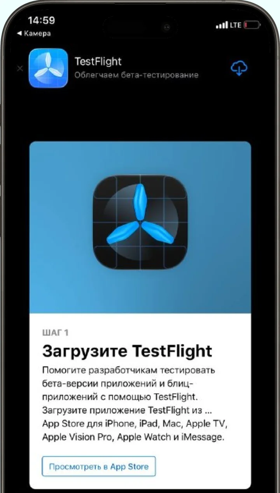
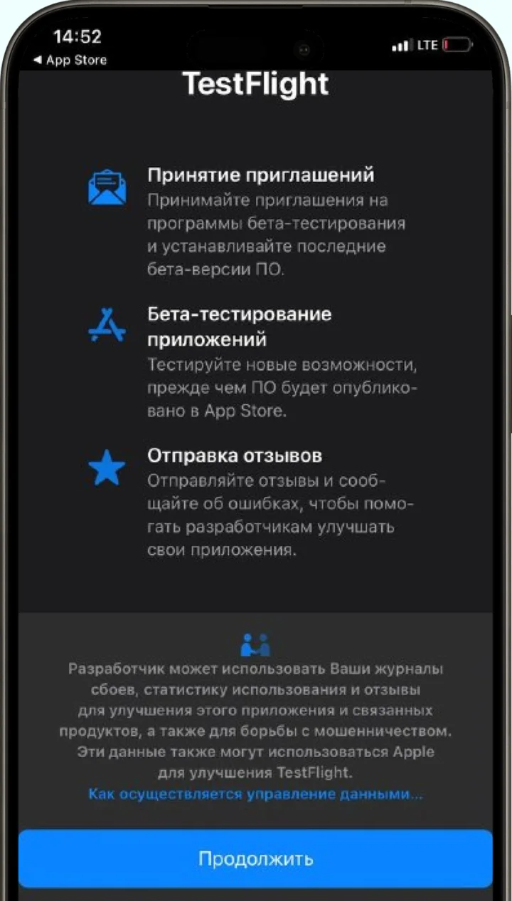
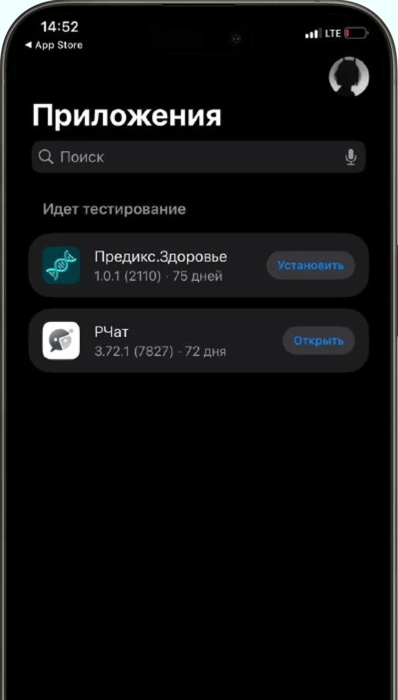
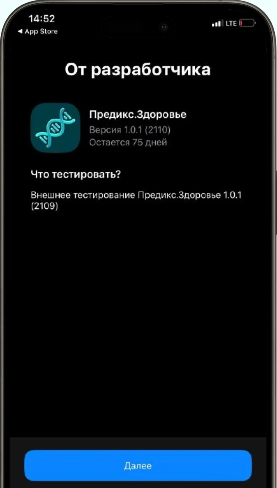

Как установить «Предикс.Здоровье» на iPhone
Пока приложение доступно через TestFlight — приложение Apple для тестирования
После перехода в магазин или настройки вернись к этой странице, чтобы продолжить. Внешний вид экранов и названия кнопок могут отличаться
-
Установи TestFlight
Нажми «Установить TestFlight» и установи приложение из App Store. Затем вернись к этой странице.

-
Открой приглашение
Нажми кнопку ниже. Если TestFlight показывает вводные экраны, пройди их, затем прими приглашение.
Открыть приглашение
-
Установи «Предикс.Здоровье»
В TestFlight найди приложение «Предикс.Здоровье» и нажми «Установить».

-
Открой приложение
Открой установленное приложение и пройди начальные экраны до регистрации.
